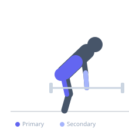
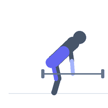

Exercise guide / Thick-Grip Deadlift / Fat Bar Deadlift
Thick-Grip Deadlift / Fat Bar Deadlift
The thick-grip deadlift is performed with a barbell that has a diameter much larger than a standard bar (typically 50-65mm vs 28mm), or with thick grip sleeves applied to a standard bar. The larger diameter prevents the fingers from wrapping fully around the bar, dramatically increasing grip strength demand. The movement itself is identical to a standard deadlift, but grip becomes the primary limiting factor rather than leg or back strength.
Primary muscles
gluteus maximus
biceps femoris long head
erector spinae
Secondary muscles
flexor carpi radialis
flexor carpi ulnaris
Stabilizers
transverse abdominis
Equipment
Standard Barbell


Starting position
- Approach the thick-bar deadlift set up at floor height. Stand with feet hip-width, bar over mid-foot. Grip the bar double overhand — no hook grip, no straps.
Setup
- Fat bar or axle is preferred. Alternatively use thick grip sleeves on a standard bar. No chalk removal — the thick grip is intentional.
Steps
- Step 1: Set up as a conventional deadlift — hinge at the hips, flat back, lats tight.
- Step 2: Grip the thick bar as hard as possible — it will not feel fully locked.
- Step 3: Drive the floor away, maintaining back position, until standing erect.
- Step 4: Lower the bar under control back to the floor.
Coaching cues
- Grip is the point — squeeze everything
- Same cues as a standard deadlift
- No straps, no hook grip
Breathing
- Deep breath and brace before the pull, exhale at lockout.
Range of motion
- Floor to full hip and knee lockout.
Tempo
- 1-0-2-0
Common mistakes
- Using standard bar with straps (negates the grip demand)
- Dropping the bar without control
Safety
- The thick bar will slip more easily than standard — maintain maximum grip tension throughout
Training
- strength: 1–5 reps
- strength: 3–5 sets
- Rest: {'strength': 240}